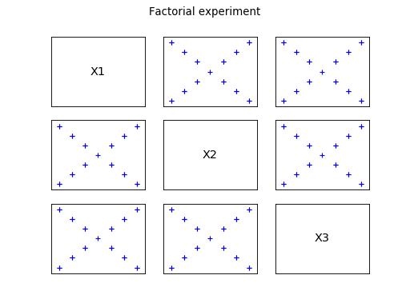
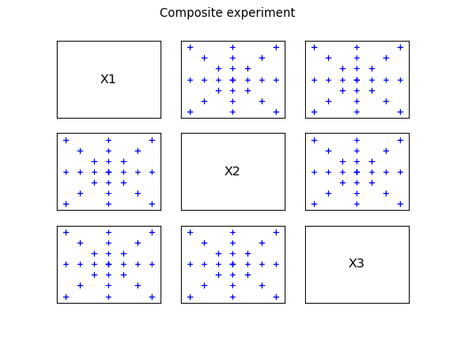
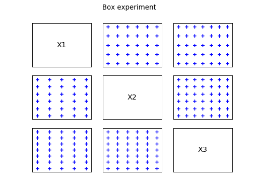
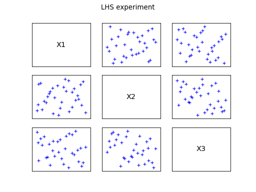
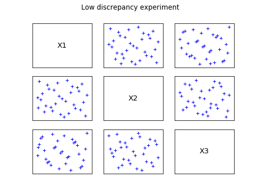
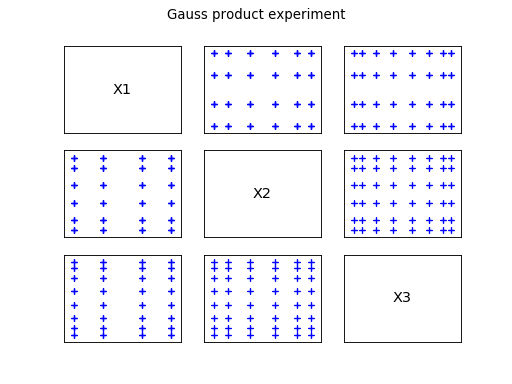
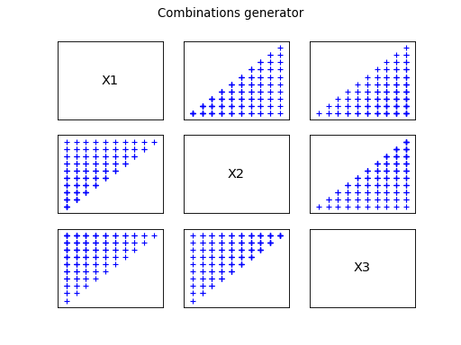
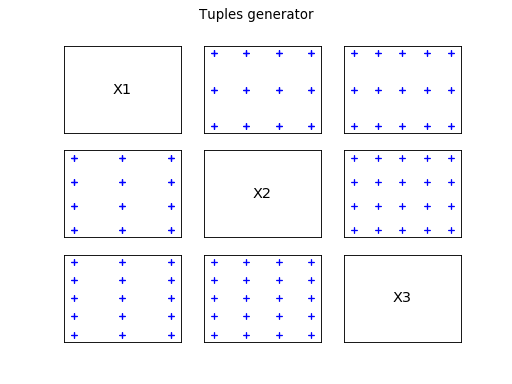

Design of Experiments
The method is used in the following context:
is a vector of input
parameters. We want to determine a particular set of values of
 according to a particular design of experiments .
according to a particular design of experiments .
Different types of design of experiments can be determined:
- some stratified patterns: axial, composite, factorial or box
patterns,
- some weighted patterns that we can split into different categories:
the random patterns, the low discrepancy sequences and the Gauss
product.
Stratified design of experiments
All stratified design of experiments are defined from the data of a
center point and some discretization levels. The
same number of levels for each direction is proposed: let us denote by
that discretization number.
The axial pattern contains points only along the axes. It is not
convenient to model interactions between variables. The pattern is
obtained by discretizing each direction according to specified levels,
symmetrically with respect to the center of the design of experiments
. The number of points generated is .
The factorial pattern contains points only on diagonals. It is not
convenient to model influences of single input variables. The pattern
is obtained by discretizing each principal diagonal according to the
specified levels, symmetrically with respect to the center of the
design of experiments . The number of points generated is

.
The composite pattern is the union of both previous ones. The number
of points generated is .
The box pattern is a simple regular discretization of a pavement
around the center of the design of experiments , with the number of
intermediate points specified for each direction (denoted
). The number of points generated
is
.
The following figures illustrates the different patterns obtained.
(Source code, png, hires.png, pdf)
(Source code, png, hires.png, pdf)

(Source code, png, hires.png, pdf)

(Source code, png, hires.png, pdf)

Weighted design of experiments
The first category is the random patterns, where the set of input
data is generated from the joint distribution of the input random
vector, according to the Monte Carlo sampling technique or the LHS one
(refer to and ).
Care: the LHS sampling method requires the independence of the input
random variables.
The second category is the low discrepancy sequences.
The Faure, Halton, Haselgrove, Reverse Halton and
Sobol sequences are proposed.
The third category is the Gauss product which is the set of points
which components are the respective Gauss set (i.e. the roots of the
orthogonal polynomials with respect to the univariate distribution).
(Source code, png, hires.png, pdf)
(Source code, png, hires.png, pdf)

(Source code, png, hires.png, pdf)

(Source code, png, hires.png, pdf)

Combinatorial generators
In some situations, one want to explore all the possibilities related
to constrained discrete uncertainties. In this case, we need to obtain
all the sets of indices fulfilling the constraints. Examples of
constraints are:
- being a subset with
 elements of a set with
elements of a set with  elements, with ;
elements, with ;
- being a permutation of elements taken into a set of
elements, with ;
- being an element of a Cartesian product of sets with
elements.
It is important to get indices and not real-valued vectors. The
distinction is made explicit by calling these design of experiments
Combinatorial Generators, which produce collections of indices instead
of samples.
The following figures illustrates the different patterns obtained.
(Source code, png, hires.png, pdf)

(Source code, png, hires.png, pdf)
(Source code, png, hires.png, pdf)

{kind=link}
{kind=link}
{kind=link}
{kind=link}
{kind=link}
{kind=link}
{kind=link}
{kind=link}
{kind=link}
{kind=link}
{kind=link}
{kind=link}
{kind=link}
{kind=link}
{kind=link}
{kind=link}
{kind=link}
{kind=link}
{kind=link}
{kind=link}
{kind=link}
{kind=link}